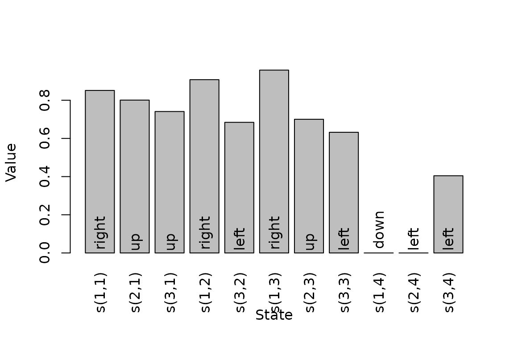
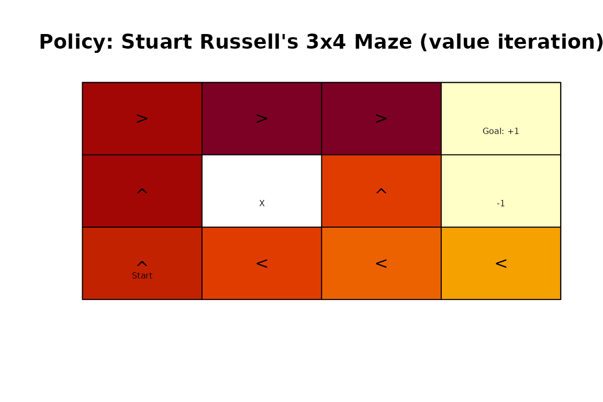
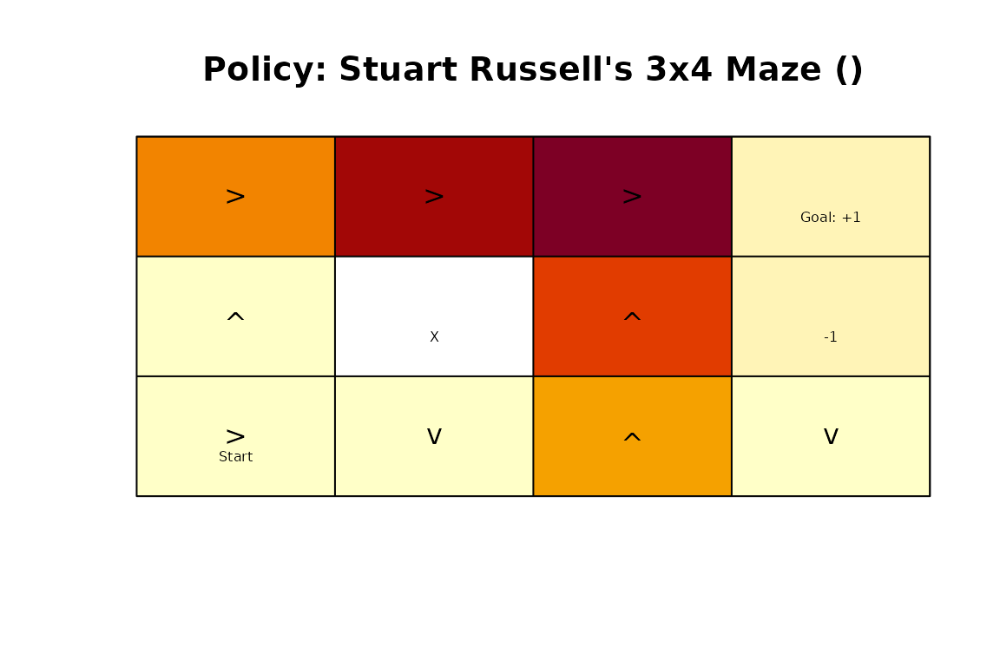

Introduction
A Markov decision process (MDP) describes sequential decision making when the state of the environment is completely observable. At every epoch, the agent observes the current state, chooses an action, receives a reward, and moves to a new state according to the transition probabilities. The objective is to find a policy that maximizes the expected sum of future rewards.
A finite-state MDP is described by states \(S\), actions \(A\), transition probabilities \(T(s' \mid s,a)\), rewards \(R(s,a,s')\), and a discount factor
\(\gamma\). The package
pomdp represents these components with an
MDP object and solves the model with
solve_MDP(). Both dynamic programming and
temporal-difference control methods are available (Sutton and Barto 2018).
The basic workflow is:
- Define a model with
MDP()or load one of the included examples. - Find a policy with
solve_MDP(). - Inspect, visualize, evaluate, or simulate the policy.
An Example MDP
We use the included Maze model. It is a gridworld with
one start state, two terminal states, and one wall. The agent can move
up, right, down, or left.
data(Maze)
Maze
#> MDP, list - Stuart Russell's 3x4 Maze
#> Discount factor: 1
#> Horizon: Inf epochs
#> Size: 11 states / 4 actions
#> Start: 0, 0, 1, 0, 0, 0, 0, 0, 0, 0, 0
#>
#> List components: 'name', 'discount', 'horizon', 'states', 'actions',
#> 'transition_prob', 'reward', 'info', 'start'An MDP is stored as a list. Its most important components are the states, actions, transition model, reward model, discount factor, horizon, and start distribution.
Maze$states
#> [1] "s(1,1)" "s(2,1)" "s(3,1)" "s(1,2)" "s(3,2)" "s(1,3)" "s(2,3)" "s(3,3)"
#> [9] "s(1,4)" "s(2,4)" "s(3,4)"
Maze$actions
#> [1] "up" "right" "down" "left"
Maze$discount
#> [1] 1
Maze$horizon
#> [1] Inf
Maze$start
#> s(1,1) s(2,1) s(3,1) s(1,2) s(3,2) s(1,3) s(2,3) s(3,3) s(1,4) s(2,4) s(3,4)
#> 0 0 1 0 0 0 0 0 0 0 0Use transition_matrix() and reward_matrix()
to inspect normalized model components. For example, the following
matrix contains the transition probabilities for moving up.
transition_matrix(Maze, action = "up")
#> s(1,1) s(2,1) s(3,1) s(1,2) s(3,2) s(1,3) s(2,3) s(3,3) s(1,4) s(2,4)
#> s(1,1) 0.9 0.0 0.0 0.1 0.0 0.0 0.0 0.0 0.0 0.0
#> s(2,1) 0.8 0.2 0.0 0.0 0.0 0.0 0.0 0.0 0.0 0.0
#> s(3,1) 0.0 0.8 0.1 0.0 0.1 0.0 0.0 0.0 0.0 0.0
#> s(1,2) 0.1 0.0 0.0 0.8 0.0 0.1 0.0 0.0 0.0 0.0
#> s(3,2) 0.0 0.0 0.1 0.0 0.8 0.0 0.0 0.1 0.0 0.0
#> s(1,3) 0.0 0.0 0.0 0.1 0.0 0.8 0.0 0.0 0.1 0.0
#> s(2,3) 0.0 0.0 0.0 0.0 0.0 0.8 0.1 0.0 0.0 0.1
#> s(3,3) 0.0 0.0 0.0 0.0 0.1 0.0 0.8 0.0 0.0 0.0
#> s(1,4) 0.0 0.0 0.0 0.0 0.0 0.0 0.0 0.0 1.0 0.0
#> s(2,4) 0.0 0.0 0.0 0.0 0.0 0.0 0.0 0.0 0.0 1.0
#> s(3,4) 0.0 0.0 0.0 0.0 0.0 0.0 0.0 0.1 0.0 0.8
#> s(3,4)
#> s(1,1) 0.0
#> s(2,1) 0.0
#> s(3,1) 0.0
#> s(1,2) 0.0
#> s(3,2) 0.0
#> s(1,3) 0.0
#> s(2,3) 0.0
#> s(3,3) 0.1
#> s(1,4) 0.0
#> s(2,4) 0.0
#> s(3,4) 0.1Models can be created directly with MDP(). Transition
probabilities can be specified as matrices, data frames built with
T_(), or functions. Rewards can similarly be specified as
matrices, data frames built with R_(), or functions. See
?MDP for complete examples and the supported shortcuts.
Solving an Infinite-Horizon MDP
solve_MDP() provides two model-based dynamic programming
methods and three model-free temporal-difference methods:
-
"value_iteration"applies Bellman optimality backups until the value function converges. -
"policy_iteration"alternates approximate policy evaluation and greedy policy improvement. -
"q_learning"learns an off-policy action-value function. -
"sarsa"learns an action-value function on-policy. -
"expected_sarsa"uses the expected value under the current policy in its update.
Value iteration is the default. It is a good starting point when the complete transition and reward models are available.
maze_solved <- solve_MDP(Maze, method = "value_iteration")
maze_solved
#> MDP, list - Stuart Russell's 3x4 Maze
#> Discount factor: 1
#> Horizon: Inf epochs
#> Size: 11 states / 4 actions
#> Start: 0, 0, 1, 0, 0, 0, 0, 0, 0, 0, 0
#> Solved:
#> Method: 'value iteration'
#> Solution converged: TRUE
#>
#> List components: 'name', 'discount', 'horizon', 'states', 'actions',
#> 'transition_prob', 'reward', 'info', 'start', 'solution'The returned object contains the original model and a
solution component. For an infinite-horizon dynamic
programming solution, the latter records the method, convergence status,
final value-function change, number of iterations, and policy.
maze_solved$solution[c("method", "converged", "delta", "iterations")]
#> $method
#> [1] "value iteration"
#>
#> $converged
#> [1] TRUE
#>
#> $delta
#> [1] 0.009858138
#>
#> $iterations
#> [1] 13policy() extracts the solution as one row per state. The
column U is the expected discounted return from that state,
and action is the action selected by the policy.
policy(maze_solved)
#> state U action
#> 1 s(1,1) 0.8513071 right
#> 2 s(2,1) 0.8007595 up
#> 3 s(3,1) 0.7409561 up
#> 4 s(1,2) 0.9077989 right
#> 5 s(3,2) 0.6842791 left
#> 6 s(1,3) 0.9578061 right
#> 7 s(2,3) 0.7002680 up
#> 8 s(3,3) 0.6321148 left
#> 9 s(1,4) 0.0000000 down
#> 10 s(2,4) 0.0000000 left
#> 11 s(3,4) 0.4045407 leftThe action-value function \(Q(s,a)\) gives the expected return from taking action \(a\) in state \(s\) and then following the policy. It is useful for comparing the available actions in each state.
round(q_values_MDP(maze_solved), 2)
#> up right down left
#> s(1,1) 0.82 0.85 0.78 0.81
#> s(2,1) 0.80 0.76 0.71 0.76
#> s(3,1) 0.74 0.66 0.70 0.71
#> s(1,2) 0.87 0.91 0.87 0.82
#> s(3,2) 0.64 0.60 0.64 0.69
#> s(1,3) 0.92 0.96 0.71 0.85
#> s(2,3) 0.70 -0.65 0.44 0.68
#> s(3,3) 0.63 0.42 0.57 0.64
#> s(1,4) 0.00 0.00 0.00 0.00
#> s(2,4) 0.00 0.00 0.00 0.00
#> s(3,4) -0.70 0.23 0.39 0.41The value function and the gridworld policy can also be visualized.
plot_value_function(maze_solved)
gridworld_plot_policy(maze_solved)
Choosing Dynamic Programming Parameters
For value iteration, error controls the maximum policy
loss used in the convergence criterion, while N_max limits
the number of iterations. An initial value function can be supplied with
U.
maze_precise <- solve_MDP(
Maze,
method = "value_iteration",
error = 1e-5,
N_max = 1000
)
maze_precise$solution[c("converged", "delta", "iterations")]
#> $converged
#> [1] TRUE
#>
#> $delta
#> [1] 9.760517e-06
#>
#> $iterations
#> [1] 25Modified policy iteration starts with a random policy. In each
iteration it uses k_backups Bellman backups to
approximately evaluate the current policy, then replaces it with a
greedy policy. It stops when the policy no longer changes.
maze_policy_iteration <- solve_MDP(
Maze,
method = "policy_iteration",
k_backups = 10
)
maze_policy_iteration$solution[c("converged", "iterations")]
#> $converged
#> [1] TRUE
#>
#> $iterations
#> [1] 5
policy(maze_policy_iteration)
#> state U action
#> 1 s(1,1) 0.8515581 right
#> 2 s(2,1) 0.8015579 up
#> 3 s(3,1) 0.7453018 up
#> 4 s(1,2) 0.9078082 right
#> 5 s(3,2) 0.6952879 left
#> 6 s(1,3) 0.9578082 right
#> 7 s(2,3) 0.7002740 up
#> 8 s(3,3) 0.6513679 left
#> 9 s(1,4) 0.0000000 down
#> 10 s(2,4) 0.0000000 up
#> 11 s(3,4) 0.4277575 leftThe two dynamic programming methods may make different choices when actions have the same value, but their policies have the same optimal value function.
Finite-Horizon Problems
For a finite horizon, the best action can depend on how many epochs
remain. Specify the number of epochs with horizon.
Finite-horizon solving currently uses value iteration and returns one
policy per epoch.
maze_finite <- solve_MDP(
Maze,
method = "value_iteration",
horizon = 3
)
policy(maze_finite)
#> [[1]]
#> state U action
#> 1 s(1,1) 0.41248 right
#> 2 s(2,1) -0.12000 up
#> 3 s(3,1) -0.12000 right
#> 4 s(1,2) 0.77088 right
#> 5 s(3,2) -0.12000 down
#> 6 s(1,3) 0.92808 right
#> 7 s(2,3) 0.60712 up
#> 8 s(3,3) 0.33888 up
#> 9 s(1,4) 0.00000 left
#> 10 s(2,4) 0.00000 down
#> 11 s(3,4) -0.12000 down
#>
#> [[2]]
#> state U action
#> 1 s(1,1) -0.0800 right
#> 2 s(2,1) -0.0800 right
#> 3 s(3,1) -0.0800 up
#> 4 s(1,2) 0.5856 right
#> 5 s(3,2) -0.0800 up
#> 6 s(1,3) 0.8672 right
#> 7 s(2,3) 0.4936 up
#> 8 s(3,3) -0.0800 up
#> 9 s(1,4) 0.0000 up
#> 10 s(2,4) 0.0000 down
#> 11 s(3,4) -0.0800 down
#>
#> [[3]]
#> state U action
#> 1 s(1,1) -0.040 right
#> 2 s(2,1) -0.040 left
#> 3 s(3,1) -0.040 right
#> 4 s(1,2) -0.040 left
#> 5 s(3,2) -0.040 up
#> 6 s(1,3) 0.792 right
#> 7 s(2,3) -0.040 left
#> 8 s(3,3) -0.040 down
#> 9 s(1,4) 0.000 up
#> 10 s(2,4) 0.000 down
#> 11 s(3,4) -0.040 downIndividual epochs can be extracted or plotted separately.
finite_policy <- policy(maze_finite, drop = FALSE)
finite_policy[[1]]
#> state U action
#> 1 s(1,1) 0.41248 right
#> 2 s(2,1) -0.12000 up
#> 3 s(3,1) -0.12000 right
#> 4 s(1,2) 0.77088 right
#> 5 s(3,2) -0.12000 down
#> 6 s(1,3) 0.92808 right
#> 7 s(2,3) 0.60712 up
#> 8 s(3,3) 0.33888 up
#> 9 s(1,4) 0.00000 left
#> 10 s(2,4) 0.00000 down
#> 11 s(3,4) -0.12000 down
finite_policy[[3]]
#> state U action
#> 1 s(1,1) -0.040 right
#> 2 s(2,1) -0.040 left
#> 3 s(3,1) -0.040 right
#> 4 s(1,2) -0.040 left
#> 5 s(3,2) -0.040 up
#> 6 s(1,3) 0.792 right
#> 7 s(2,3) -0.040 left
#> 8 s(3,3) -0.040 down
#> 9 s(1,4) 0.000 up
#> 10 s(2,4) 0.000 down
#> 11 s(3,4) -0.040 down
gridworld_plot_policy(maze_finite, epoch = 1)
Learning from Simulated Experience
The temporal-difference methods use the MDP model only to simulate
interaction with the environment. They are useful for experimenting with
reinforcement learning. Their main controls are the number of episodes
N, learning rate alpha, exploration rate
epsilon, and maximum episode length horizon.
Models with no absorbing state require a finite
horizon.
The algorithms involve random exploration, so set a seed when reproducibility is important.
set.seed(1234)
maze_q_learning <- solve_MDP(
Maze,
method = "q_learning",
N = 1000,
alpha = 0.1,
epsilon = 0.1
)
policy(maze_q_learning)
#> state U action
#> 1 s(1,1) 0.8239701 right
#> 2 s(2,1) 0.7631532 up
#> 3 s(3,1) 0.6981705 up
#> 4 s(1,2) 0.8905822 right
#> 5 s(3,2) 0.4097767 left
#> 6 s(1,3) 0.9574402 right
#> 7 s(2,3) 0.6356223 up
#> 8 s(3,3) 0.3487937 up
#> 9 s(1,4) 0.0000000 down
#> 10 s(2,4) 0.0000000 down
#> 11 s(3,4) 0.2970429 leftQ-learning is off-policy: it explores with an epsilon-greedy behavior policy while learning a greedy target policy. Sarsa and expected Sarsa instead learn from the current behavior policy. Because these methods estimate a solution from sampled experience, their learned values and policies can vary between runs and generally require parameter tuning.
Evaluating and Simulating a Policy
MDP_policy_evaluation() applies Bellman backups to
estimate the value of a given policy. This is useful for comparing an
optimal policy with a manually specified or random policy.
set.seed(1234)
random_policy <- random_MDP_policy(Maze)
rbind(
random = MDP_policy_evaluation(random_policy, Maze),
optimal = MDP_policy_evaluation(policy(maze_solved), Maze)
)
#> s(1,1) s(2,1) s(3,1) s(1,2) s(3,2) s(1,3)
#> random -4.1644261 -3.7740116 -2.9911696 -3.0378368 -2.843810 -2.9882765
#> optimal 0.8515562 0.8015515 0.7452441 0.9078082 0.695123 0.9578082
#> s(2,3) s(3,3) s(1,4) s(2,4) s(3,4)
#> random -2.195218 -2.2998637 0 0 -2.1952182
#> optimal 0.700274 0.6510268 0 0 0.4271197simulate_MDP() follows a solved policy through the
environment. It reports the average discounted reward and visitation
counts, and can optionally return complete trajectories.
set.seed(1234)
simulation <- simulate_MDP(
maze_solved,
n = 1000,
horizon = 20,
return_trajectories = TRUE
)
simulation$avg_reward
#> [1] 0.761
head(simulation$trajectories)
#> episode time s a r s_prime
#> 1 1 0 s(3,1) up -0.04 s(2,1)
#> 2 1 1 s(2,1) up -0.04 s(1,1)
#> 3 1 2 s(1,1) right -0.04 s(1,2)
#> 4 1 3 s(1,2) right -0.04 s(1,2)
#> 5 1 4 s(1,2) right -0.04 s(1,3)
#> 6 1 5 s(1,3) right 1.00 s(1,4)Simulation is especially helpful for checking how a policy behaves from a particular start distribution, estimating its realized reward, and diagnosing states or actions that occur frequently.
Next Steps
The Maze, Cliff_walking,
Windy_gridworld, and DynaMaze data sets
provide additional MDP examples. See
vignette("gridworlds", package = "pomdp") for tools that
build and visualize gridworld MDPs, and ?solve_MDP for all
solver parameters.